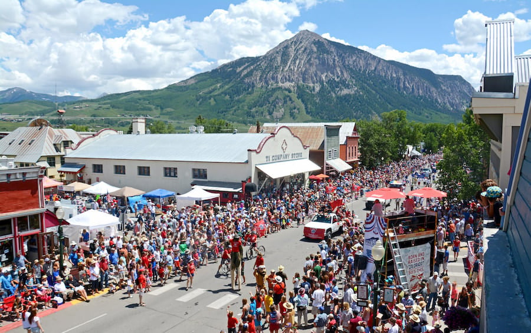
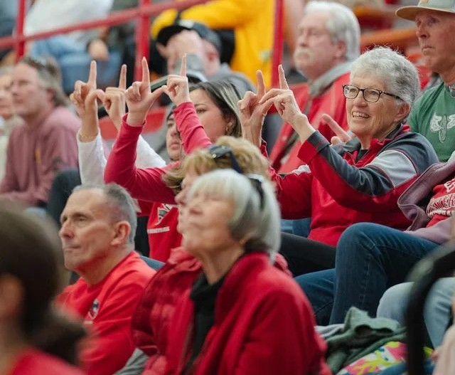
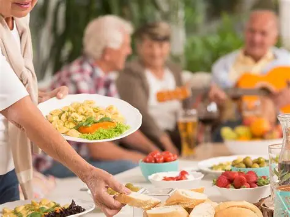

Crested Butte Events
Crested Butte, Colorado is a true four-season mountain town where every time of year brings its own adventure. In winter, it's a snowy playground for skiing, snowboarding, and cozy nights by the fire. As spring arrives, trails open and wildflowers begin to bloom, leading into a summer filled with hiking, mountain biking, fishing, rafting, and festivals that celebrate its title as the “Wildflower Capital of Colorado.” When fall rolls in, golden aspens light up the valleys, offering perfect days for scenic drives, quiet hikes, and crisp mountain air. Whether you visit for powder, petals, or peaceful views, Crested Butte offers something unforgettable year-round.
Western Colorado University
Western offers athletic viewings for a wide array of interests, from traditional NCAA programs to unique Mountain Sports teams to low-pressure intramurals. Along side athletics Western also offers viewings their talented music program. From tradition choir to student organized concerts.
Senior Meals Program
Homestyle cooking with homemade breads and desserts always! Full meal served Mondays, Wednesdays & Fridays @ 11:30 AM - $6 per person. Deliveries available for those who cannot attend in person.TO ORDER: 970.641.8272
Menu can be found in The Shopper & Gunnison Country Times weekly. Come early to catch up with friends and meet new ones!

Every Tuesday night at the Gunnison Elks Lodge for BINGO fun the whole family can enjoy!
123 S. Main Street, Gunnison
Doors open at 6:30 PM
BINGO starts at 7:30 PM
Bring your friends, bring the kids, and get ready for a night full of laughs, prizes, and good vibes.
Family-friendly and open to all—come see why Tuesday nights are better at the Elks!
123 S. Main Street, Gunnison
Doors open at 6:30 PM
BINGO starts at 7:30 PM
Bring your friends, bring the kids, and get ready for a night full of laughs, prizes, and good vibes.
Family-friendly and open to all—come see why Tuesday nights are better at the Elks!